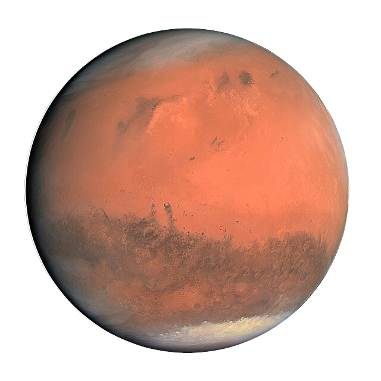

Merkur
Merkur
Merkur er den minste planeten i solsystemet vårt, og er nærmest
Solen.
-
Selv om den er nærmest Solen, er den ikke den varmeste planeten.
Venus er!
- En dag på Merkur utgjør 176 dager på Jorden.
- Merkur har ingen måner eller ringer.
- Overflaten er full av krater, slik som Månen vår.
- Planeten er oppkalt etter den romerske guden Mercurius.
 Venus
Venus
Venus er Jordens nærmeste planetariske nabo, og den andre planeten
regnet fra Solen.
-
Det er den varmeste planeten i solsystemet vårt, selv om den ikke
er nærmest Solen.
-
Venus roterer bakover sammenlignet med de fleste andre planeter.
- En dag på Venus er lengre enn dens år.
-
Den har en giftig atmostfære som mesteparten er av karbondioksid.
-
Venus blir ofte kalt Jordens "søsterplanet" på grunn av dens like
størrelse.
 Jorden
Jorden
Jorden er hjemplaneten vår, og er den eneste kjente planeten med
liv.
-
Det er den eneste planeten som ikke er navngitt etter en
gud eller gudinne.
-
Den er også eneste planet hvor vann finnes i alle tre former
(vann, is og damp).
-
Atmosfæren til planeten vår beskytter oss fra meteorer og
radiasjon.
- Innsiden av Jorden er like varm som overflaten av Solen.
- 70% av planetens overflate er dekt med vann.

Mars
Mars er kjent som "Den røde planet", og har fanget oppmerksomheten
til mennesker i århundrer.
- Mars har den største vulkanen i solsystemet, Olympus Mons.
- Den har to måner kalt Phobos og Deimos.
- Den røde fargen kommer fra jernoksid (rust) på overflaten.
-
Mars har sesonger slik som Jorden, men de varer dobbelt så lenge.
- Forskere har funnet spor av tidligere vannstrømmer på Mars.
 Jupiter
Jupiter
Jupiter er den største planeten i solsystemet vårt, og er en
gasskjempe.
-
Den store røde flekken er en storm som har herjet i over 400 år.
- Jupiter har i hvert fall 79 måner.
- Den roterer fortere enn alle andre planeter i solsystemet.
-
Man kunne fått plass til mer enn 1300 av Jorden inni Jupiter.
- Magnetfeltet rundt den er det sterkeste av alle planetene.
 Saturn
Saturn
Saturn er den sjette planeten fra Solen, og er kjent for dens
spektakulære ringer.
- Ringene er for det meste laget av is og stein.
-
Hypotetisk sett kunne Saturn ha flytt i vann (dersom det fantes et
stort nok basseng...).
- Den har 82 bekreftede måner, inkludert månen Titan.
- Et år på Saturn varer nesten 30 jordår.
- Vindstyrken på planeten kan bli opptil 1,800 km i timen.
Uranus
Uranus er den syvende planeten, og den første som var oppdaget med
et teleskop.
- Den roterer på siden, ulikt andre planeter.
- Uranus har 13 kjente ringer.
- Atmosføren dens inneholder "diamantregn".
- Den var originalt kalt "Georges stjerne"
- En årstid på Uranus varer 21 jorår.
 Neptun
Neptun
Neptun er den åttende og ytterste planeten fra Solen.
- Den var oppdaget gjennom matematiske prognoser.
- Neptun har de sterkeste vindene i solsystemet.
- Hvor den også er den kaldeste planeten.
- Et Neptun-år tilsvarer 165 jordår.
-
Den har en stor mørk flekk, i likhet til Jupiters store røde
flekk.